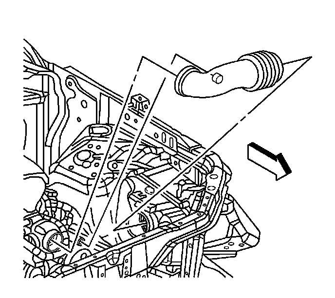

Air Cleaner Fresh Air Duct/Hose: Service and Repair
Air Cleaner Outlet Duct Replacement
Removal Procedure

1. Remove the fuel injector sight shield. Refer to Fuel Injector Sight Shield Replacement (Service and Repair) .
2. Disconnect the positive crankcase ventilation (PCV) tube from the air cleaner duct.
3. Loosen the air duct clamp at the throttle body.
4. Loosen the air duct clamp at the mass air flow (MAF)/intake air temperature (IAT) sensor.
5. Remove the air cleaner duct from the vehicle.
Installation Procedure
1. Install the air cleaner duct to the vehicle.
Notice: Refer to Fastener Notice (Fastener Notice) .
2. Tighten the air cleaner duct clamps at the throttle body and the MAF/IAT sensor.
Tighten the air duct clamps to 3 N.m (27 lb in).
3. Connect the PCV tube to the air cleaner duct.
4. Install the fuel injector sight shield. Refer to Fuel Injector Sight Shield Replacement (Service and Repair) .